Imagenes de la Guerra Fría

 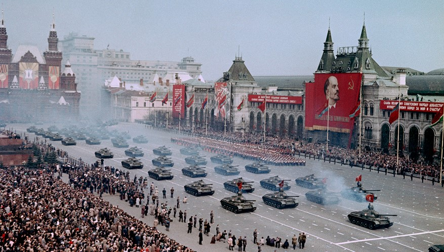
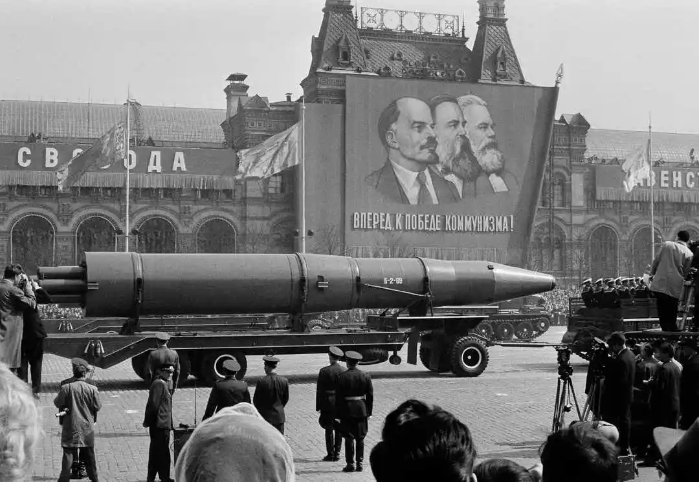
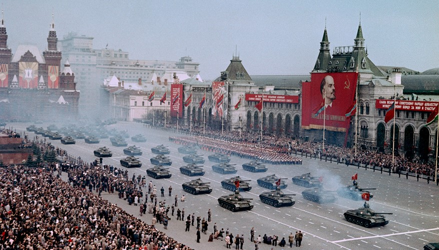
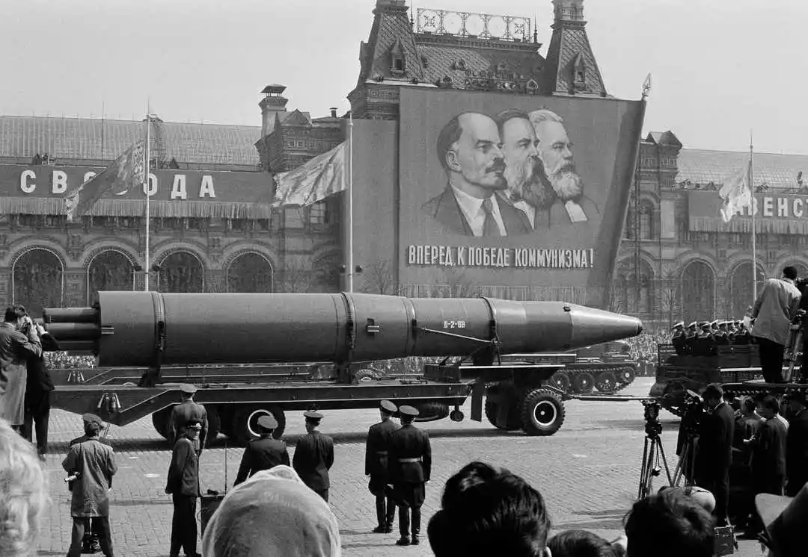
 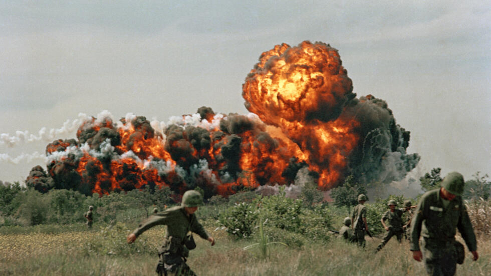
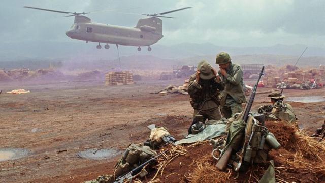
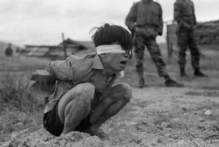
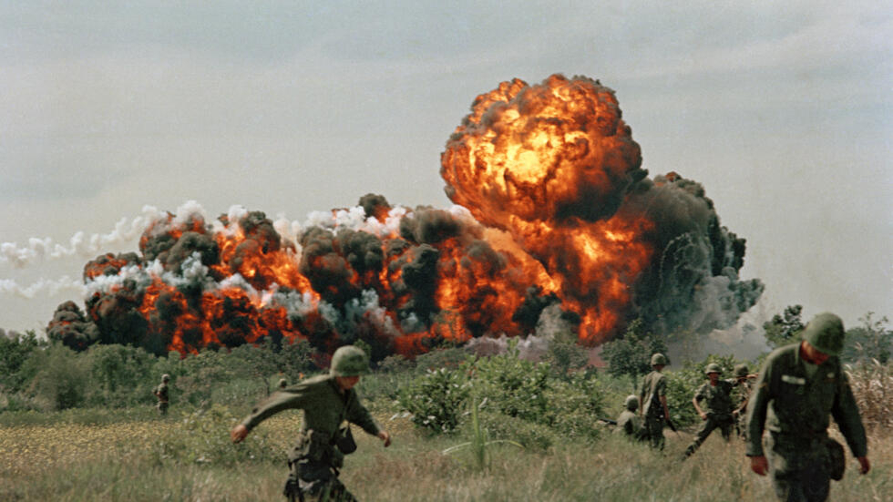
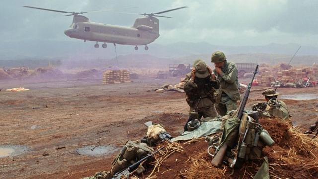
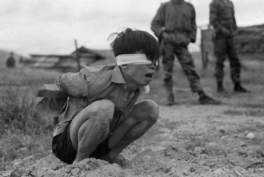
Fue un conflicto por la supremacía del mundo y la imposición del modelo político, económico, ideológico y cultural que cada país defendía: el comunismo (URSS) y el capitalismo (EE. UU.).
Ver Más
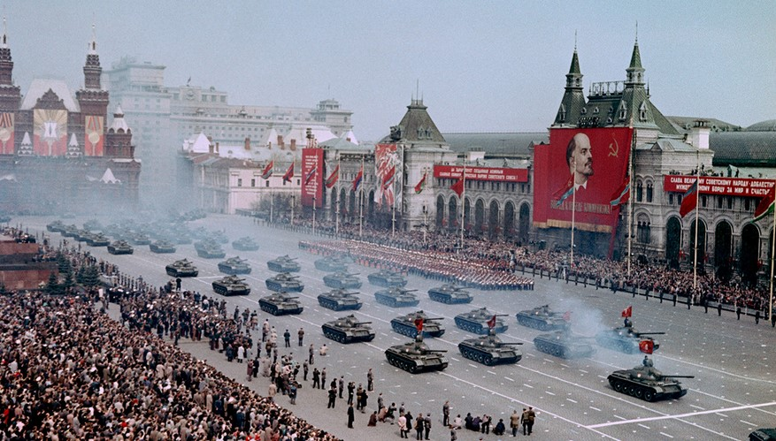
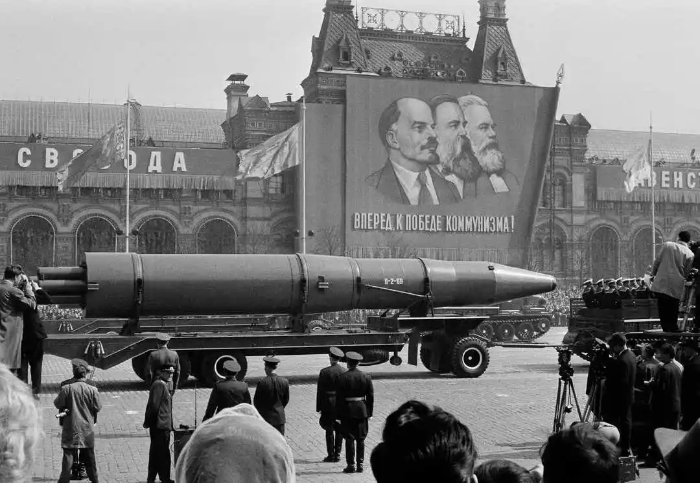
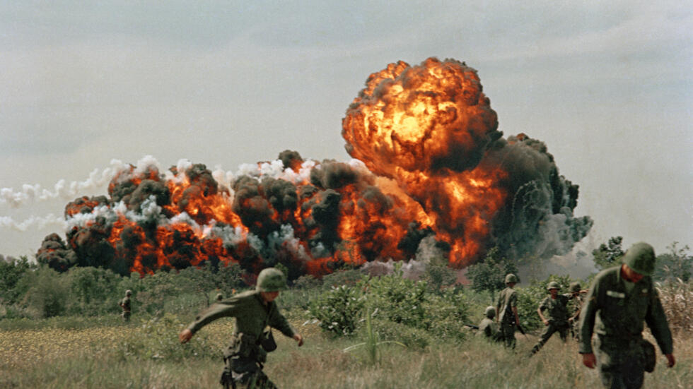
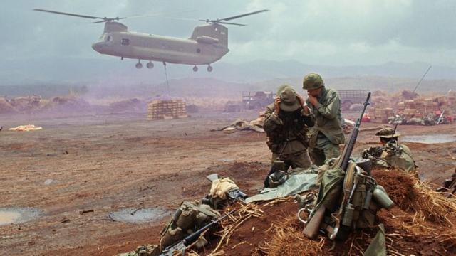
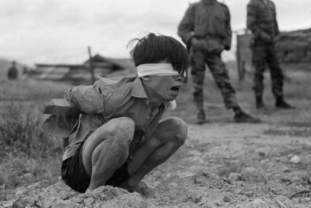

Después de la Segunda Guerra Mundial, el control de Alemania se dividió entre los aliados occidentales y la Unión Soviética. Berlín estaba situada en el sector soviético oriental, pero como era la capital del país, su control también estaba dividido entre las potencias occidentales y la URSS. En junio de 1948, la URSS intentó hacerse con el control de toda la ciudad cortando todo el tráfico de superficie hacia Berlín Occidental. Estados Unidos respondió con un puente aéreo diario de alimentos y suministros a la ciudad sitiada. El puente aéreo duró hasta septiembre de 1949. En total, las potencias aliadas occidentales entregarían 2,3 millones de toneladas de suministros y combustible a Berlín Occidental durante el puente aéreo.

La fricción entre el norte y el sur finalmente estalló en guerra en 1950, cuando los norcoreanos invadieron el sur. El sur no estaba preparado para la agresión y fue inmediatamente invadido. Al final, Estados Unidos intervino para ayudar al ejército de Corea del Sur, creando esencialmente una guerra por poderes entre la Unión Soviética y Estados Unidos. Nunca se firmó ningún tratado de paz definitivo para poner fin a la Guerra de Corea. En cambio, las dos partes firmaron un armisticio en 1953 que cesó las hostilidades y formó la Zona Desmilitarizada de Corea, una tierra de nadie entre los dos países que constituía la nueva frontera.

Tanto Estados Unidos como la URSS querían alcanzar una superioridad tecnológica sobre el otro. En esa lucha se incluía la carrera por convertirse en el primer país en construir un cohete capaz de lanzar un objeto al espacio. Esto no sólo sería un inmenso logro tecnológico, sino que un cohete que fuera lo suficientemente potente como para transportar una carga útil al espacio también podría transportar una ojiva nuclear capaz de llegar al otro país. En octubre de 1957, los soviéticos lanzaron el Sputnik, el primer satélite artificial del mundo. Los estadounidenses promedio podrían encender sus radios AM y escuchar al Sputnik transmitir su señal sonora.
El sudeste asiático, en particular Vietnam, fue considerado una importante esfera de influencia tanto por los líderes estadounidenses como soviéticos. Cuando las fuerzas nacionalistas crearon Vietnam del Norte en 1956, la URSS y China reconocieron y respaldaron al nuevo país comunista, mientras que Estados Unidos se comprometió a detener la expansión del comunismo en la región y respaldó a Vietnam del Sur. Al igual que en Corea, Estados Unidos y la URSS evitaron la guerra directa respaldando a los gobiernos y fuerzas opuestos. La guerra fue inmensamente impopular en Estados Unidos, que finalmente retiró lo último de sus fuerzas y ayuda a Vietnam del Sur en 1975. Vietnam del Norte finalmente prevaleció en la guerra y Vietnam se unificó en la República Socialista de Vietnam en 1976.
En 1961, un gran número de berlineses orientales huían a través de la frontera abierta hacia Berlín Occidental. A última hora del 12 de agosto, en un esfuerzo por detener la marea de desertores, el primer ministro soviético Khrushchev dio permiso al gobierno de Alemania Oriental para detener el flujo de emigrantes cerrando su frontera para siempre.
El 13 de agosto comenzó la construcción del Muro de Berlín en la frontera entre Berlín Oriental y Occidental. En sólo dos semanas se construyó la primera valla de alambre de púas y bloques de hormigón. El muro tenía más de 26 millas de largo y finalmente la cerca de alambre de púas fue reemplazada por un muro de 13 pies.

El 16 de octubre de 1962, la CIA informó al presidente John F. Kennedy que un avión espía estadounidense U-2 había tomado fotografías de los sitios de lanzamiento de misiles nucleares soviéticos en construcción en Cuba. Formó un grupo de asesores que luego se convertiría en el Comité Ejecutivo (Ex Comm) para desarrollar la respuesta de Estados Unidos. Durante los siguientes 13 días se desarrollaría la crisis de los misiles cubanos, acercando a Estados Unidos y la ex Unión Soviética a una guerra nuclear.

A principios de noviembre de 1983, el mundo puede haber estado más cerca de una guerra nuclear que en cualquier otro momento desde la crisis de los misiles cubanos. La OTAN estaba llevando a cabo lo que consideraba un ejercicio de rutina llamado Able Archer, una simulación diseñada para entrenar y probar los procedimientos para pasar de la guerra convencional a la nuclear.

En junio de 1987, el presidente estadounidense Ronald Reagan se paró en la infame Puerta de Brandenburgo, parte del Muro de Berlín, y desafió al Secretario General soviético: “Sr. ¡Gorbachov, derriba este muro! Poco menos de 18 meses después, millones de alemanes celebraron que miles de sus compatriotas derribaran el Muro de Berlín, uno de los símbolos más emblemáticos e imágenes perdurables de la Guerra Fría.
Aprovechando la ola de malestar simbolizada por la apertura del Muro de Berlín, los líderes de todas las naciones de Europa del Este, excepto Bulgaria, fueron derrocados por levantamientos populares a fines de 1989. La Unión Soviética estaba en crisis y hubo varios intentos de derrocar al Secretario General Gorbachov. Finalmente, el 8 de diciembre de 1991, la Unión Soviética colapsó. El presidente de la República Rusa, Boris Yeltsin, formó la Comunidad de Estados Independientes. Después de 45 años, la Guerra Fría, la guerra más larga en la historia de Estados Unidos, había terminado.